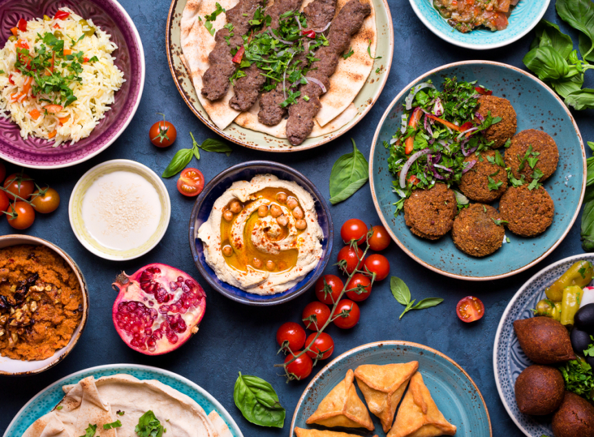

Munir comida árabe
Elaboración artesanal
Todos nuestros productos son elaborados por nuestro cheff Matias Ati, quien elabora de forma manual panes, masas, y rellenos, poniendo su toque personal en cada producto.
Ingredientes de calidad
Los alimentos son cuidadosamente seleccionados para aportar la mejor calidad y sabor a las preparaciones. Tanto vegetales como carnes presentan una frescura excepcional.
Sabores originales
Gracias a nuestro chef de descendencia árabe, los sabores que encontrás en Munir son producidos mediante recetas originarias del medio-oriente, con condimentos y formas de preparación inigualables.
